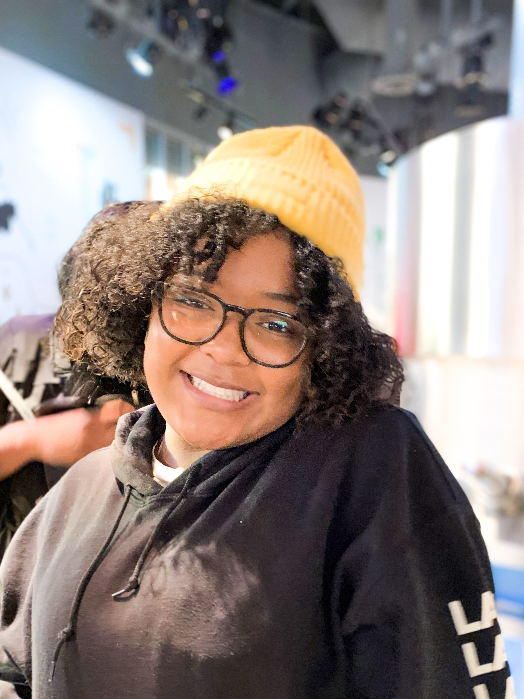

Alessandra Maria Adams
Journalism Student

Alessandra is a student at the University of Maryland majoring in Multi-Platform Journalism and minoring in General Business.
Experience
Filmmaking Camp Counselor
TIC Summer Camp
May 2019 - August 2019 and May 2020- August 2020
- Oversee the curation of camp made films
- Work with campers to come up with and create a short film.
- Teach campers to basics of Adobe Premiere Pro and camera techniques
Front Desk
SoulCycle Bethesda
April 2021 - Present
- Effectively communicate with team members and customers
- Brainstorm ways to go above and beyond for customers
- Work with staff to keep common spaces clean and sanitized throughout the day
- Communicate with customers regarding wants and needs for their visit.
Education
University of Maryland, College Park
- Bachelor of Arts, Multi-Platform Journalisms, University of Maryland, College Park, 2023
Skills
- Leadership
- Customer Service
- Adobe Permiere Pro